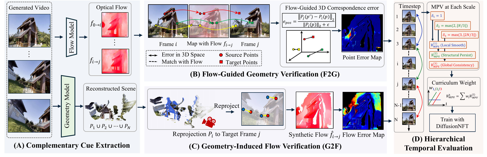

TL;DR
- The problem. Camera-controlled video world models look good frame by frame, yet drift and deform when the camera moves — the 3D scene is not consistent across views.
- Bidirectional cross-space verification. We check agreement between 2D optical flow and reconstructed 3D geometry in both directions, and turn it into a reward.
- RL post-training. The reward is used to post-train WorldPlay with DiffusionNFT — no change to the base architecture.
- Results. Lower reprojection, epipolar and flow errors than WorldPlay on DL3DV and MIND, with higher temporal SSIM.
01Generated with WorldPrism
15 results · camera-controlled · from the supplementary material02Better 3D consistency: Comparison before post training
033D reconstruction comparison
WorldPlay BASELINE
WorldPrism OURS
Motion matching & alignment
Scenes are selected using estimated output motion. Translation examples use the explicitly stated WorldPrism input spacing; the observatory pair uses identical inputs. Compensated examples also have feature-based pose checks. These estimates share VGGT depth and are not ground truth. Translation is anchored to corresponding first-frame depth; rotation is measured from the first estimated camera. Active translation and rotation amplitude ratios must both be within 0.8–1.25. New translation and orbit scenes also require visible parallax, at least 0.05 scene-depth translation in both outputs, and consistent travel direction. Orbits must rotate at least 10° in both outputs. Both clouds use the same view, center and scale. Camera paths are not resized to match.
Download motion check ↓03Method

WorldPrism post-trains a camera-controlled video world model with a 3D-consistency reward. Given a generated video, the reward is computed in four steps.
Flow & geometry estimation
An off-the-shelf optical-flow model (UFM) gives 2D correspondences between frames, and a feed-forward reconstructor (Pi3) lifts frames to 3D points and cameras.
Flow → Geometry (F2G)
Follow 2D correspondences into 3D and check that matched pixels land at the same reconstructed position. Drifting or deforming content breaks this agreement.
Geometry → Flow (G2F)
Project the reconstructed geometry into another view and compare the flow it induces with the estimated optical flow. F2G and G2F catch complementary failures.
Hierarchical temporal evaluation
Consistency is scored at local, structural and longer-range temporal scales, so both short-term jitter and long-term drift are penalized.
DiffusionNFT post-training
The combined reward drives reinforcement-learning post-training of WorldPlay with DiffusionNFT, keeping the architecture unchanged.
Benchmark results
| Model | Reprojection ↓ | Epipolar ↓ | Bi err. ↓ | Flow ↓ | Point ↓ | HPSv3 ↑ | T-SSIM ↑ |
|---|